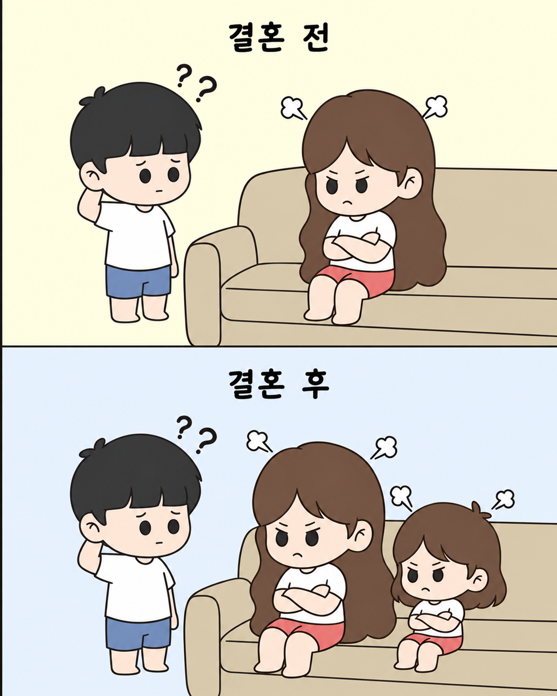

결혼전 VS 결혼후
댓글

굴종의미학 영포티넷답다
이게 굴종까지 갈 주제의 그림인가? ㅋㅋ 걍 귀엽네 하고 말일인데,, 난 진짜 모르겠음
옃에서 딸 이유도 모르고 같이 화내네 ㅋㅋㅋㅋ
아들은 옆에서 뛰어다님ㅋㅋㅋ
별거 아닌거 같지만 가정교육 박살나고 있는 현장임 애들 앞에서 남편이랑 싸우거나 무시하면 딸이 보고 배운다 그렇게 큰 딸 결혼하면 저거 재탕임 애들 앞에서는 서로 존중하고 싸울거면 애들 없는 곳에서 싸워야함
죽을때까지 이해못함
댓글 몇개가 날카롭네 ㅋㅋㅋ
애 없이 이혼?